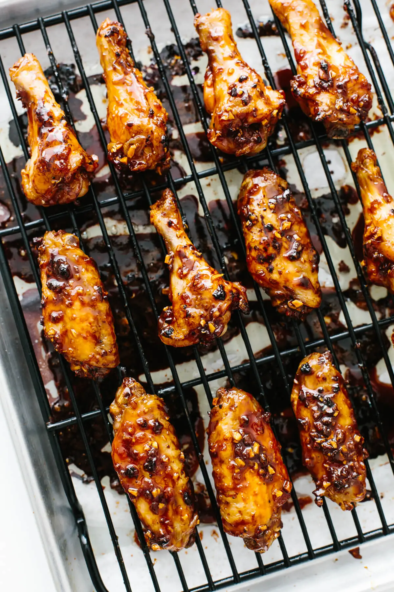
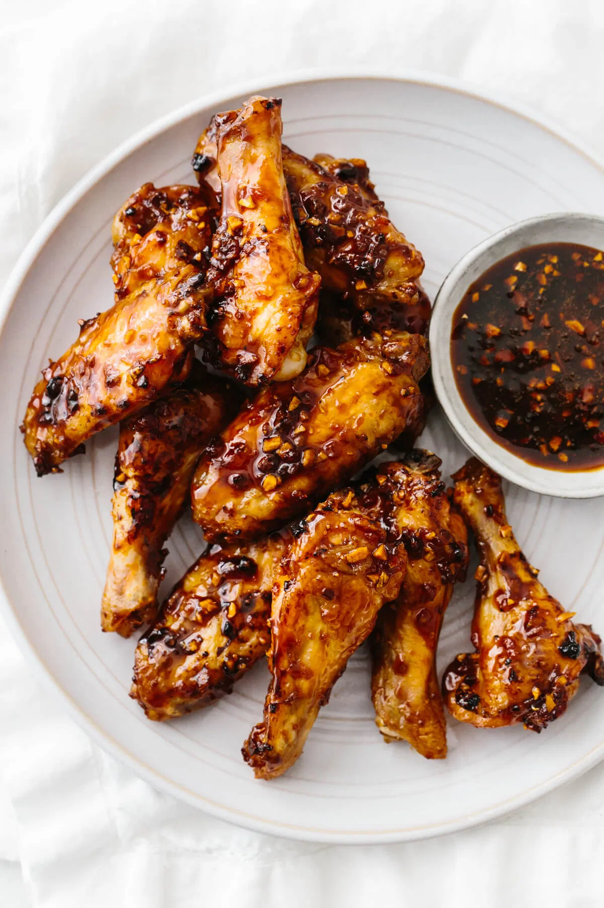

Soy Garlic Ginger Chicken Wings
Who doesn't love chicken wings.?
When you are watching a game or binge watching a series, wings are an absolute necessity. And it goes well with the beer too.

Soy garlic ginger chicken wingsare a sticky, sweet and flavorful appetizer with a kick. They’re infused with a soy, ginger, and garlic marinade, then baked until golden. Serve these tasty wings during game day or your next party. But be warned – they might just disappear in an instant!
So lets get started.
Ingredients Required:
For the base of the wings:
-
Wings – 2 pounds, which is about 20-24 wings (make sure the tips are removed and drumettes are separated)
-
Avocado Oil – 1 tablespoon (You can also use any olive oil)
- Salt and Pepper – to taste
As for the sauce, soy-garlic-ginger is one tasty combination that fuses all the right asian flavors together. It’s sweet, tangy, and the fresh garlic and ginger give it a punch of flavor. To make the sauce, just gather together these ingredients:
-
Honey– 1/2 cup
-
Soy Sauce – 1/4 cup (I’ve used Tamari for gluten-free soy sauce and you could use coconut aminos as well)
-
Garlic Cloves – 4 large cloves minced
-
Ginger – 1 tablespoon finely diced fresh ginger
-
Water – 1/4 cup
Getting started with the recipe.
So we got the required ingredients. Lets get started.
Once you’ve prepped your wings, simply pop them in the oven, make the sauce while you’re waiting, then toss them together.
-
Preheat oven to 425 degrees Fahrenheit.
-
Remove any moisture from the chicken wings using a paper towel to blot.
- Toss the wings with oil, salt and pepper in a large mixing bowl.
-
On a wire rack, spread the wings out into a single layer. Make sure to place a piece of parchment paper on a baking sheet first, then place the wire rack on top.
-
Bake for 45-50 minutes, until crispy.
-
While the wings are cooking, make the sauce. Add the honey, soy sauce, garlic, ginger, and water to a small pot. Bring it to a boil and reduce the heat to a low setting and let it simmer and reduce for about 10 minutes.
-
Remove the sauce from the heat and let it cool. Note that it will continue to thicken as it cools.
-
Remove wings from the oven and toss them in the sauce. Then place them back into the oven on the wire rack and cook for an additional 10 minutes.
If you have any leftover sauce you can coat the chicken wings again or serve it as a dipping sauce!
Happy Eating...!
